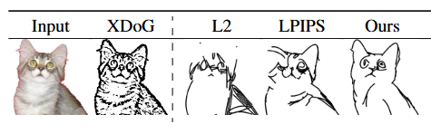

CLIPasso
本文是计算机图形学论文阅读小组作业
CLIPasso论文精读
论文标题为CLIPasso: Semantically-Aware Object Sketching，意思是保持语义信息的物体简笔画生成
其中CLIP是openai在2021年的工作，通过对比学习在大规模数据集上进行预训练，让模型理解文本和图像之间的语义关系，使得它能够配对自然语言和视觉信息
另外，CLIPasso和picasso（毕加索）是谐音，毕加索是著名的画家
这篇论文获得了计算机图形学顶会SIGGRAPH的2022年最佳论文奖
背景介绍
简笔画任务的要求
给定一个物体的图片，要在白纸上用有限的笔画数量来描绘这个物体。一个人类艺术家会选取所画对象的关键视觉特征，只用若干线条表示物体的本质，例如下图毕加索的著名画作《Le Taureau》
绘制简笔画的相关工作
有些工作使用简笔画数据集来训练一个网络生成简笔画，这种做法能够模仿数据集中的简笔画风格和抽象程度，因此限制了生成内容的风格，而且收集这样的数据集是困难的
可微的光栅化器
论文链接：https://dl.acm.org/doi/10.1145/3414685.3417871
这一工作提出了一个可微的光栅化器，能够充当矢量图和渲染出的标量图之间的桥梁，为机器学习方法通过反向传播优化矢量图提供可能
贝塞尔曲线
贝塞尔曲线的核心是线性内插的递归。
当只有起点和终点(锚点)时，曲线其实就是两点间的直线，每个时刻刻画当前应该运动到的位置只需要计算一次线性内插(也是“一层”线性内插)。
之后，每在起点和终点间插入一个点，就多加“一层”线性内插计算，且这个新加的层中包含比“上一层”多一次的内插运算。
比如，当起点和终点之间有一个点时，在某次运功轨迹点的运算中，“最上层”(新加的层)做两次线性内插的运算，即原本两条边上的线性内插，然后连接这两次内插的结果位置并构成一条新的临时线段，然后这个线段再做一次内插，这次内插是“下层”内插，只运算一次内插。总共计算了3次内插。
当起点和终点之间有两个点时，就先运算“最顶层”的三次内插，得到三个对应位置的点，这就回到了上一段“起点和终点之间有一个点”的情况，所以总的内插运算次数为 3 + 2 + 1 = 6 次。
以此类推，假如起点和终点之间有N个点，那么要做的内插运算次数就是 (N + 1) + N + (N - 1) + ... + 2 + 1 = (N + 2) * (N + 1) / 2 次。这是一个二次的复杂度，但实际应用不会很高次，而且做的全部都是线性运算，很方便计算机图形的绘制和渲染。
视频教程【GAMES101-现代计算机图形学入门-闫令琪】https://www.bilibili.com/video/BV1X7411F744/?p=11&share_source=copy_web&vd_source=0746909e8642dc821f4dc86699071129

具体方法
方法概览
输入为一张图片 ，以及使用曲线的个数 。首先计算输入图像的显著图（saliency map），用于指导控制点初始位置的采样，然后借助一个可微的光栅化器(Rasterizer)，将控制点渲染成简笔画。
简笔画和原图都会输入CLIP模型，得到损失函数：几何距离 和语义距离 。反向传播能够经过光栅化器，优化控制点位置。
上图中学习到的参数和损失函数用红色高亮表示，蓝色高亮部分的参数在优化过程中被冻结，实线箭头标识了反向传播的路径
贝塞尔曲线
简笔画通过在白色背景上用 n 条贝塞尔曲线绘制，每条贝塞尔曲线由若干个点控制（论文中使用四个点）。这样就只需要通过优化控制点的位置来优化生成的简笔画。
贝塞尔曲线的控制点数、粗细、透明度在训练过程中固定，可以作为超参数调节，来得到不同的风格。
下面左图演示了使用不同的控制点数量绘制的效果，控制点数的多少决定图像的风格是复杂还是简约，右图演示了使用笔刷效果的贝塞尔曲线。
损失函数
如下图是不同损失函数优化效果的对比

XDoG是一种使用edge map（边缘图）的方法，L2 Loss只对比像素区别，由于简笔画是高度稀疏和抽象的，像素级指标不足以衡量简笔画和原图之间的距离。LPIPS虽然能够理解语义，但是最终效果和边缘图类似。相比之下，作者的基于CLIP的方法是效果最好的，能够权衡语义和形态的相似性
作者利用预训练的CLIP的图像编码器，CLIP在各种不同类型的图片上进行过预训练，所以可以很好地编码自然图片和简笔画中的信息，而不需要进一步微调，具备良好的zero-shot能力。
由于CLIP是在图像和文本对上训练的，其图像编码器的输出embedding本身包含了语义信息，这样才能够和文本embedding计算相似度，所以只需要将原图和简笔画都输入CLIP模型，计算输出embedding的距离，就能表示原图和简笔画之间在语义上的相似性，公式如下：
其中 是原图输入到CLIP模型的输出embedding， 是将 条贝塞尔曲线的控制点输入到光栅化器得到的简笔画图， 计算的是余弦相似度
由于上面的损失函数主要考虑语义信息的相似性，为了让原图和简笔画图在空间特征上更加相似，还需要衡量几何相似度的损失函数。为此，可以计算CLIP模型中间层的L2相似度：
其中 是CLIP模型在第 层的输出。在这篇论文中，作者使用基于 ResNet101 Backbone的CLIP模型，提取其第3、4层
最终的优化目标如下所示，两种损失被加权组合在一起，其中 取 0.1
优化过程
最终的目标是找到n条贝塞尔曲线控制点的组合，让简笔画在几何形状和语义上都尽可能逼近原图。优化的过程使用反向传播，得益于可导的光栅化器，反向传播能够经过光栅化器，优化的控制点位置。
本文作者使用了和CLIPDraw一样的数据增强方案，在原图和简笔画输入CLIP模型之前都经历了数据增强，能够避免生成人类看来没有意义的笔画。
迭代过程持续到损失基本不变，这通常需要约2000步，下图展示了优化过程中的简笔画外观变化
显著图与初始化
这个任务的目标函数是高度非凸的，因此，最终的优化结果和控制点的初始位置密切相关。某些曲线必须被准确地放置在关键位置（如眼睛、鼻子），这对于整个简笔画的语义至关重要，依赖于初始化。如下图，最后两列演示了随机初始化和有引导的初始化之间的效果区别
这里作者提出了一种有引导的初始化方法，使用预训练的CLIP ViT-B/32模型，ViT(vison transformer)能够在图片的不同patch之间使用注意力机制，实现对图片上下文信息的全局建模。借助https://arxiv.org/abs/2103.15679 这篇工作，可以从自注意力头中获取一张相关性图，而不需要任何文本监督。如上图第二列的attention，展示了相关性图的效果，可以观察到和决定图片语义的关键部分（人脸）被高亮了。
考虑到笔画应当放置在物体的边缘，这里还借助XDoG获取边缘图。最终的初始化分布图由自注意力相关性图和边缘图相乘得到，并且经过Softmax标准化，效果如上图第三列所示。可以观察到清晰的人脸轮廓，同时关键语义部分如人眼、嘴被高亮。
由于初始化是基于采样的，这给最后的结果带来了随机性。为了提高生成质量，本文进行三次初始化采样，分别得到简笔画，只保留损失最低的一幅。
创新点
和其他工作对比，本工作的优势如下
-
并不局限于特定的训练数据集
-
能够根据笔画的多少，生成不同抽象程度的简笔画
-
不局限于数据集中的简笔画风格和类型
-
能够生成矢量图
-
不直接依赖于边缘图(edge map)
实验结果
人类打分
作者邀请了121位志愿者，向他们展示生成的不同抽象级别的简笔画图，志愿者需要完成分类任务或分实例任务，以此检验简笔画对于原图信息的还原度。
对于分类任务，志愿者需要在若干文本描述中选出和简笔画类别对应的；对于分实例的任务，会展示一张简笔画图和若干从同一类别中抽取的原图，志愿者需要识别简笔画来自于哪一张原图。最终人类志愿者的识别准确率如下

可以观察到，本工作随着笔画数的增多（抽象级别的降低），识别准确率显著上升。在分类任务上本工作领先于其他相关工作，在分实例任务上，本工作落后于工作B，作者觉得这是情有可原的，因为工作B基于轮廓而不够抽象
机器分类
这里使用SketchyCOCO数据集的10个分类测试，模型分别是Resnet34和CLIP ViT-B/32的未经过微调的分类器（使用prompt: A sketch of a(n) class-name），对简笔画进行分类，效果如下图
可以观察到本工作在CLIP分类器上的表现遥遥领先，无论笔画的多少，都能取得领先于其他工作的分类效果，但是在resnet分类器上，本工作不占优势。
局限性
-
本工作在遇到有背景的图片输入时，性能会显著下降。这是可以理解的，因为背景会干扰初始化过程中显著图的生成，模型并不能分辨要绘制背景还是物体，一种解决方案时自动生成遮罩去掉背景
-
本工作的笔画不是按序生成的，这和人类作图有很大区别
-
曲线的数量是作为超参数调节的，而不是根据原图中物体的复杂度自动决定
思考
对于大模型时代如何做研究的思考
作者在这篇论文的补充材料指出，他们只使用了一张V100的GPU，就能在6分钟内完成2000个迭代，生成一张简笔画，速度是很快的。
在当下大模型时代，很多顶会的论文都是用大量算力堆出来的，特别是在CV, 多模态等领域，没有几十张显卡，很难做出有影响力的工作。而这篇论文只需要相对小的计算量，还得到了年度最佳的荣誉，对于算力不足的科研工作者很有启发意义。
探索一些跨界的研究，例如本文将大模型和图形学整合，有时能产生很好的想法、做出很好的效果，而不需要很多的计算资源
对于机器分类实验的思考
个人认为在机器分类实验中，放ResNet34的分类效果并不能说明简笔画的生成效果，只能说明模型识别能力的区别。因为ResNet的zero-shot迁移能力很差，正如openai官网上的CLIP demo（如下图），CLIP能够识别各种不同形式的香蕉，因为它能够理解香蕉的语义信息，而resnet只能识别和数据集类似风格的香蕉，对于玩具香蕉、素描香蕉等，就表现得很差。
对于局限性的思考
作者在局限性章节中指出，本工作的笔画不是按序生成的，这和人类作图有很大区别，个人觉得这并不算局限性，因为在这个问题上模仿人类是没有必要的，大多数生成式ai如GAN、diffusion生成图片的方式都和人类绘图完全不同